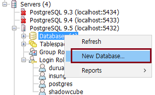
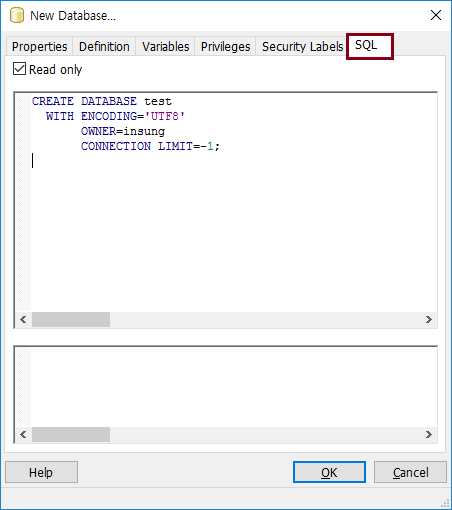
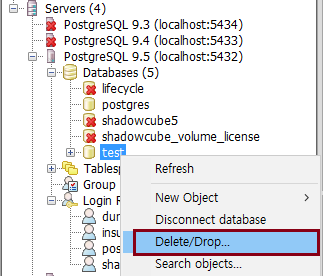

PostgreSQL 데이터베이스 구조
데이터베이스 및 테이블
postgres 의 데이터베이스 및 테이블에 대해 알아보자.
데이터베이스 생성 방법
pgAdmin3 > Database > New Database... 선택

Properties 탭 > Name 입력, Owner 선택
Definition 탭 > 기본값
SQL 탭은 최종적으로 쿼리를 확인할 수 있음

테이블 생성 및 삭제 예제
pgAdmin3 > Database 선택 > Databases > test 선택 후 SQL 쿼리 버튼 클릭
테이블 생성을 위해 다음 쿼리 입력
CREATE TABLE test ( id int, name varchar(50), description varchar(255) );
테이블 삭제를 위해 다음 쿼리 입력
DROP TABLE test;
데이터베이스 삭제 방법
pgAdmin3 > Database > Delete/Drop... 선택

PostgreSQL Data Types
Let's Prcactice
PostgreSQL Tutorial
>
create table
편 참고하여 좀 더 연습해보자.
처음으로
이전
다음